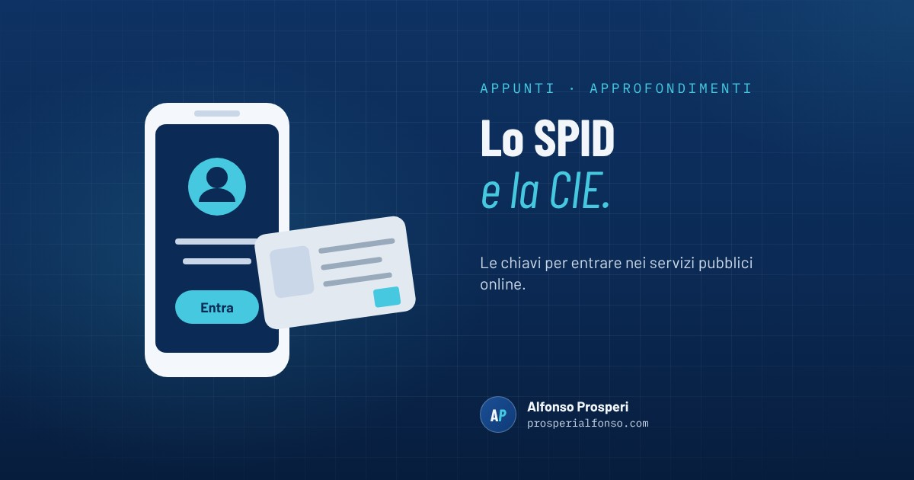

Lo SPID (Sistema Pubblico di Identità Digitale) è la "chiave" per entrare nei servizi online della pubblica amministrazione: INPS, Agenzia delle Entrate, fascicolo sanitario, scuola, Comune, app IO. Con un solo nome utente e una sola password accedi a tutto. Accanto allo SPID c'è un'altra chiave che vale per gli stessi servizi: la CIE, la carta d'identità elettronica.
Come funziona
Lo SPID non lo rilascia lo Stato direttamente, ma alcuni gestori autorizzati (Poste, Aruba, InfoCert, Namirial, Sielte, TIM, Lepida, Register e altri). Tutti valgono allo stesso modo: cambia solo come ti identificano e quanto costa. Ci sono tre livelli di sicurezza:
- Livello 1: nome utente e password, per i servizi meno delicati.
- Livello 2: in più un codice temporaneo o una notifica sull'app del gestore. È quello usato quasi ovunque.
- Livello 3: con un dispositivo fisico, per i servizi che chiedono la massima sicurezza.
Quanto costa oggi
Fino a qualche anno fa lo SPID era quasi sempre gratuito. Ora non è più così per tutti: per esempio, dal 2026 lo SPID di Poste (PosteID) costa 6 euro l'anno a partire dal secondo anno, con alcune esenzioni. Anche altri gestori prevedono costi per l'attivazione o il rinnovo. Prima di sceglierne uno, o se ti arriva una richiesta di pagamento, controlla le condizioni sul sito del gestore.
La CIE come alternativa gratuita
Se hai la carta d'identità elettronica, puoi usarla per entrare negli stessi servizi senza costi aggiuntivi. Ti servono il PIN che hai ricevuto quando l'hai fatta (metà allo sportello, metà con la carta) e l'app CieID sul telefono. Dopo la prima configurazione, l'accesso è rapido quanto quello dello SPID. Se hai perso il PIN, si può recuperare con il codice PUK o chiederne uno nuovo in Comune.
Come richiedere lo SPID
- Scegli un gestore e vai sul suo sito o nella sua app.
- Inserisci i dati personali, il numero di telefono e l'email.
- Fatti riconoscere: a seconda del gestore, con la CIE o il passaporto elettronico tramite app, con una videochiamata, di persona in un ufficio o con la firma digitale.
- Scarica l'app del gestore per ricevere le notifiche di accesso.
Dal 2022 lo SPID si può chiedere anche per i figli minorenni, con il consenso dei genitori, presso i gestori che lo prevedono. È utile per i servizi scolastici.
Tre regole di sicurezza
- Non dare mai a nessuno le credenziali né i codici che ricevi: nessun ente te li chiede al telefono o per messaggio.
- Diffida di SMS ed email che ti dicono che lo SPID "sta per scadere" con un link da cliccare: è una truffa molto diffusa.
- Attiva le notifiche dell'app del gestore, così vedi ogni accesso fatto con le tue credenziali.
Con SPID o CIE puoi fare da casa molte cose di cui parlo nel blog: dal 730 precompilato all'attestazione ISEE, fino ai certificati anagrafici.